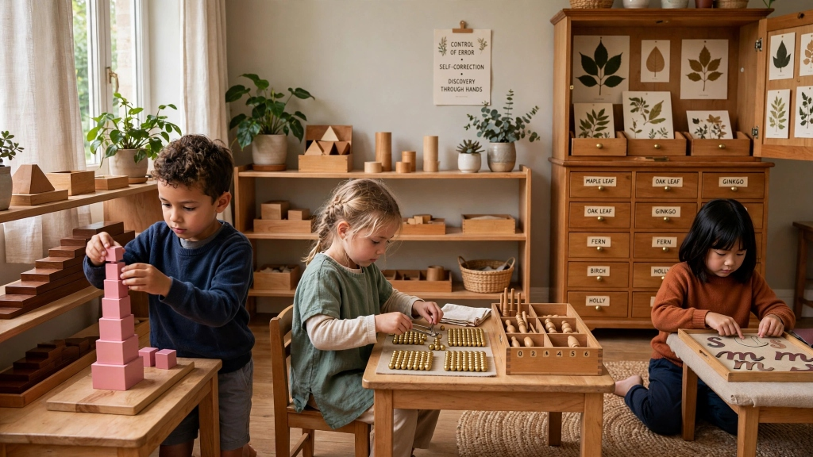
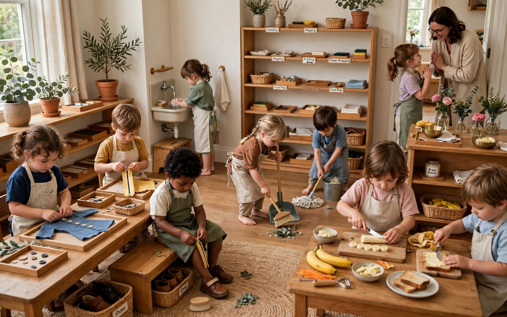
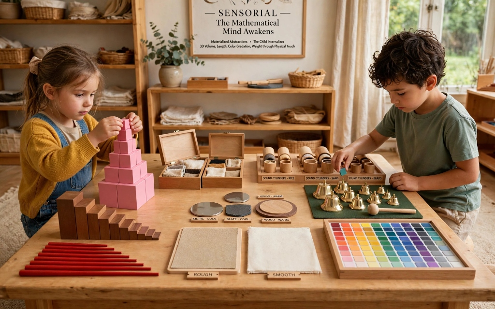
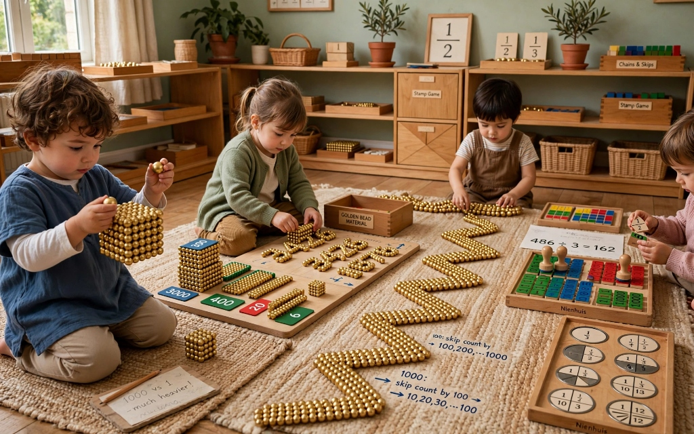
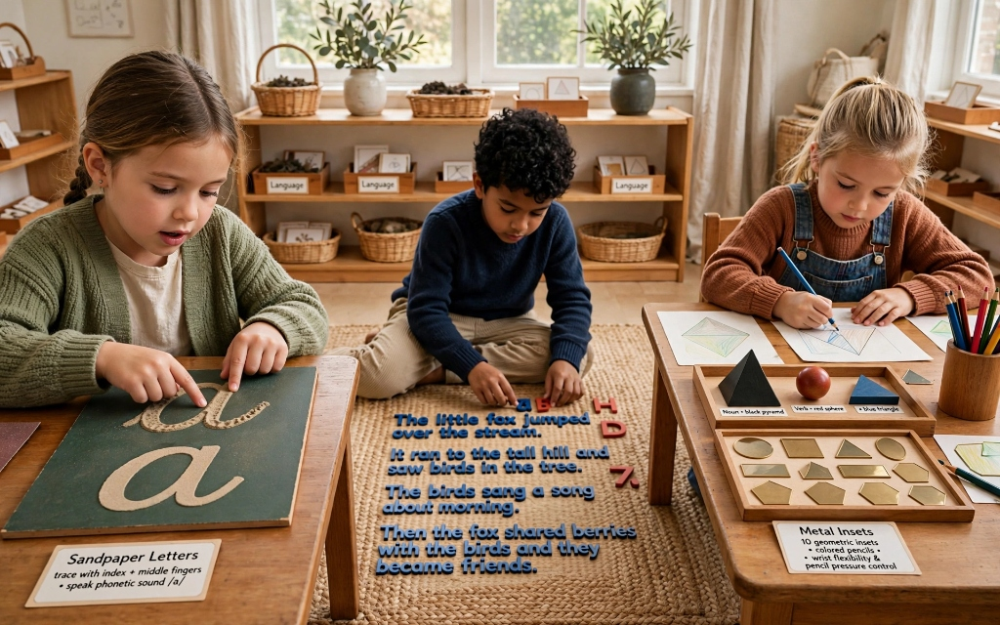
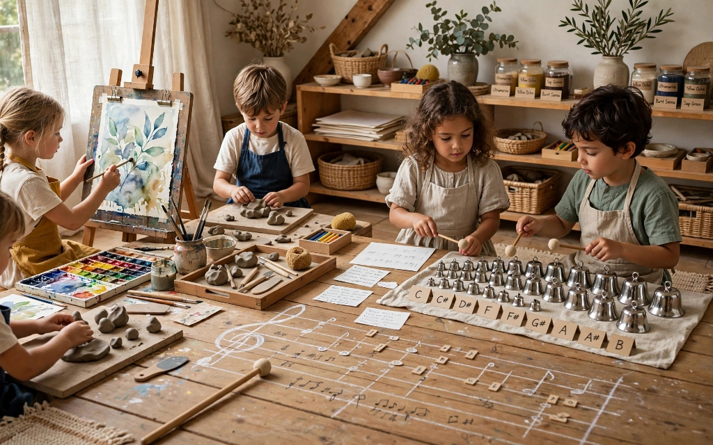
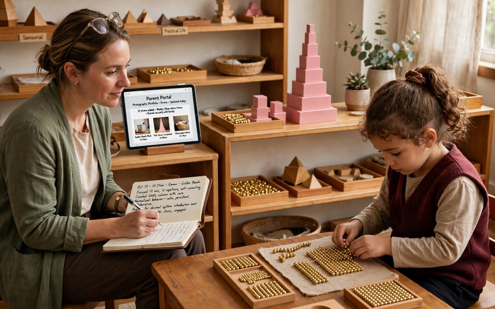

A comprehensive look at the five interconnected learning areas: Practical Life, Sensorial, Math, Language, and Culture.

In an authentic Montessori pod, the curriculum is not presented as abstract lectures or forced homework worksheets. Instead, learning materializes through concrete, scientifically designed sensorial apparatus with a built-in control of error. Children discover solutions through their own hands, developing supreme analytical self-confidence and uninterrupted focus.
Pouring liquids, spooning grains, buttoning, sweeping, polishing copper, preparing fresh snacks, and social grace & courtesy.
Pink Tower, broad brown stairs, knobbed cylinder blocks, baric tablets, color gradient boxes, and geometric cabinet forms.
Golden beads decimal system, spindle boxes, teens and tens boards, stamp game, bead chains, and geometric fractions.
Tactile sandpaper phonogram letters, metal insets for pre-writing control, large movable alphabet, and rich nomenclature cards.
Continental puzzle maps, land and water forms, botanical leaf cabinet, animal kingdom classification, solar system planets, and history timelines.
Parent Observation
"Seeing our 4-year-old comfortably add 4-digit numbers with golden beads proved to us that Montessori concrete math truly works wonders."
- Rebecca M., Primary Pod Parent
Practical Life is the beating heart of the Montessori prepared environment. When an adult rushes to tie a child's shoes or pour their water, they inadvertently communicate: "You cannot do this." In our pods, children are granted the time, scaled tools, and dignity to master real life.
Buttoning, zipping, handwashing rituals, dressing frames, and independent shoe changing.
Sweeping with small brooms, mopping spills, polishing brass, flower arranging, and dusting leaves.
Slicing organic bananas with wavy cutters, spreading butter on toast, and peeling carrots.
Greeting visitors, excusing oneself politely, asking for turns, and serving peers at table.


Dr. Montessori called the sensorial materials "materialized abstractions." Before a child is introduced to formal mathematical formulas or geometry textbooks, they internalize 3D volume, length, color gradation, and weight through physical touch.
The Pink Tower (volume), Brown Stairs (thickness), and Red Rods (length 10cm to 1 meter).
Rough and smooth touch boards, fabric pairing boxes, and thermal metal/slate plates.
Sound cylinders filled with graduated grains, and the 26 Montessori tone bells.
Color box 3 with 63 tablets arranged into 9 delicate color shade spectrums.
In traditional schooling, children are forced to memorize abstract numerical symbols before understanding what quantities represent. In Montessori, a 4-year-old physically picks up a golden bead thousand-cube and compares its weight to a single bead unit.
Building 4-digit numbers (3,426) using physical beads, cards, and dynamic 4-digit addition.
100-bead and 1000-bead chains unfurled across floor rugs, teaching skip counting effortlessly.
Transitioning from physical beads to square wooden color-coded stamps for division.
Circular metal insets dividing wholes into halves, thirds, tenths, and twelfths.


Maria Montessori unlocked a profound biological truth: writing is an act of creation (encoding internal thoughts into symbols), whereas reading is an act of interpretation (decoding another mind's thoughts). Children write first!
Tracing cursive and print letter shapes with index and middle fingers while speaking phonetic sounds.
Composing complex multi-paragraph stories on rugs before hand-muscle pencil fatigue sets in.
10 geometric insets used with colored pencils to develop wrist flexibility and pencil pressure control.
Black pyramid for Noun, red sphere for Verb, blue triangle for Adjective—learning grammar visually.
Connecting the child to our vast planetary ecosystem—tracing continental puzzle maps, classifying leaf shapes, and studying indigenous world cultures.
Wooden laser-cut maps of all seven continents with brass knobs. Children lift countries, trace coastlines onto parchment paper, and color national biomes.
14 inset wooden drawers classifying leaf shapes: reniform, sagittate, cordate, and spatulate. Children pair cards with live leaves gathered from our campus garden.
Hands-on exploration of the 5 vertebrate classes (mammals, birds, reptiles, amphibians, fish) paired with anatomically accurate 3-part nomenclature cards.
We avoid pre-printed coloring sheets that restrict imagination. Instead, our creative atelier provides artist-quality pigments, wet-on-wet watercolor paper, raw earthenware clay, and 26 tuned Montessori tone bells.
Children strike bells with wooden mallets, hunting for identical pitches by ear. They arrange chromatic scales and transcribe original melodies onto wooden floor staves before ever touching formal sheet music.

Our campus includes a certified outdoor permaculture laboratory where children care for living organisms daily.
Children feed organic fruit rinds from snack to red wiggler worms, witnessing biological decomposition and recycling compost back to the soil.
Tracking root radicle and cotyledon development in clear observation glass tubes, recording growth charts with millimeters.
Harvesting sugar snap peas, strawberries, and sweet mint to wash, cut, and serve during the morning practical life snack cycle.

Standardized tests measure memorization under stress; they fail to measure intrinsic problem-solving, empathy, deep focus, or creative perseverance. In KinderNest pods, assessment is continuous and scientific.
Lead guides sit unobtrusively with observation notebooks, recording the exact materials a child handles, their repetitions, point of normalization, and readiness for next lessons. Every family receives rich photographic portfolios via the Parent Portal.
Schedule a quiet morning observation tour to see how our materials invite children into hours of joyful, self-directed learning.